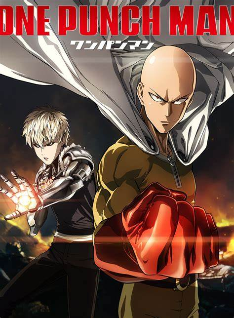

3 Anime that are a must watch
There are thousands of anime masterpieces all around the globe, and it's always been a question for new anime viewers for which one to watch first. If you are also one of them, then you have come to the right place. Below are 3 animes that are a must watch:
1. One-Punch Man
One-Punch Man is a Japanese superhero manga series created by One. It tells the story of Saitama, a superhero who, because he can defeat any opponent with a single punch, grows bored from a lack of challenge.An anime adaptation was announced in the 15th issue of Weekly Young Jump on March 10, 2015. The first season was directed by Shingo Natsume at Madhouse animation studio and written by Tomohiro Suzuki. There are a total of 2 seasons for this anime consisting of 12 episodes each, giving us a better viewing experience.
2. Demon Slayer: Kimetsu No Yaiba
Demon Slayer: Kimetsu no Yaiba is a Japanese manga series written and illustrated by Koyoharu Gotouge.The story takes place in the Taishō era Japan, where a secret organization, known as the Demon Slayer Corps, has waged a longtime war against demons for centuries. These demons are former humans who possess supernatural abilities such as super strength, rapid regeneration, and unique powers referred to as "Blood Demon Art". Demons can only be killed if they are decapitated with weapons crafted from a rare alloy called Nichirin, injected with a poison extracted from wisteria flowers, or exposed to direct sunlight.The story follows teenage Tanjiro Kamado, who strives to become a Demon Slayer after his family was slaughtered and his younger sister, Nezuko, is turned into a demon. It has a total of 54 episodes and is still ongoing.
3. One Piece

One Piece is a Japanese manga series written and illustrated by Eiichiro Oda. The story follows the adventures of Monkey D. Luffy and his crew, the Straw Hat Pirates, where he explores the Grand Line in search of the mythical treasure known as the "One Piece" in order to become the next King of the Pirates. It has a total of 21 seasons making up more than 1000 episodes as in the present.